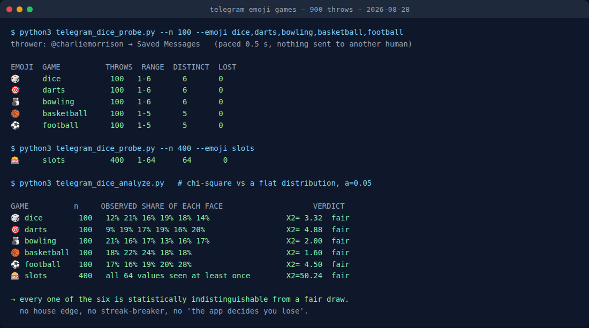
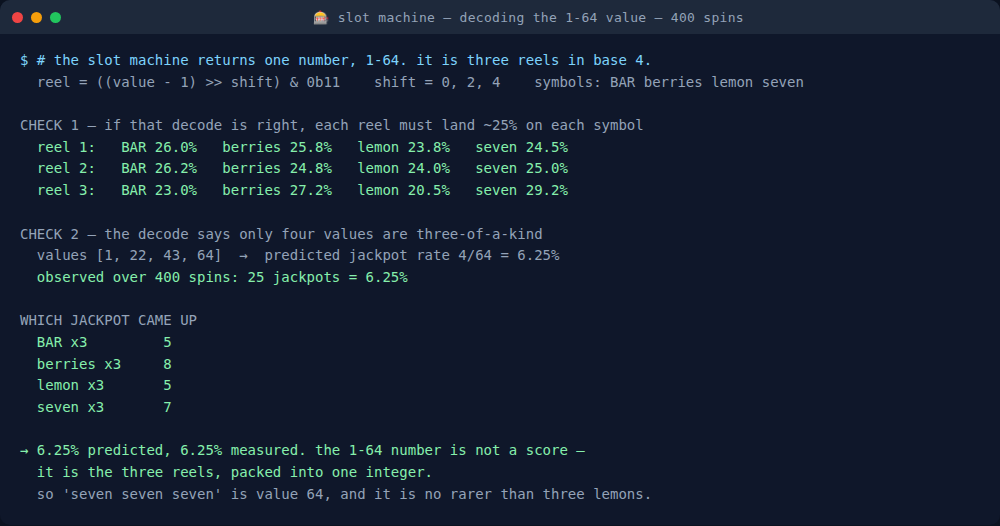

I Threw 900 Telegram Emoji Dice. All 6 Games Are Fair
Almost everyone who uses Telegram has sent the die emoji at some point and watched it roll. Far fewer people know that there are six of these, that they work in any chat with no bot and no setup, and that the number is decided by Telegram's server before the animation even starts.
And as far as I can tell, nobody has bothered to check whether they are fair.
That is not an academic question. In practice these get used to decide things — who pays the bill, who goes first, who does the forfeit. If you are settling a bill with a die emoji you are trusting a random number generator you have never seen, in an app that has every commercial reason to make its animations feel exciting rather than be flat.
So I threw 900 of them and counted every single result.
The short version: all six are statistically indistinguishable from a fair draw, there is no house edge and no streak-breaking, and the slot machine's mysterious 1-64 number turns out not to be a score at all. It is three reels packed into one integer — which means the jackpot is 1 in 16, not 1 in 64, and most people playing it have the odds wrong by a factor of four.
There are six of them, not one
Here is the full set, with the range each one returns:
| Emoji | Game | Returns | What a high value means |
|---|---|---|---|
| 🎲 | Die | 1–6 | The face shown, exactly like a real die |
| 🎯 | Darts | 1–6 | 6 is the bullseye, 1 misses the board |
| 🎳 | Bowling | 1–6 | 6 is a strike, 1 is a gutter ball |
| 🏀 | Basketball | 1–5 | 4 and 5 go in, the rest miss |
| ⚽ | Football | 1–5 | 3, 4 and 5 are goals |
| 🎰 | Slot machine | 1–64 | Three reels — see below, it is not a score |
The practical detail that most round-ups skip: the emoji has to be the entire message. Send 🎲 on its own and Telegram treats it as a throw, animates it, and everyone in the chat sees the same result. Type "let's roll 🎲" and it stays an ordinary emoji sitting in a sentence. That single rule is the difference between "this doesn't work on my phone" and a working game.
It works in a direct message, in a group, in a channel, and in your own Saved Messages. No bot is involved at any point.
Why the fairness question is worth asking
Because the result is not generated on your phone. Telegram's own protocol documentation describes the dice as a media type where the server sends back a value field alongside the emoji — the outcome arrives with the message. The animation you watch for two seconds is a replay of a decision that was already made.
That is the right design — it is the only way everyone in a group sees the same roll — but it does mean the number is entirely Telegram's to choose. Nothing about the interface lets you verify it. So the only way to find out is to throw a lot of them and count.
How I threw 900 of them
I used Telegram's client protocol to send throws automatically and record what came back. Three decisions shaped the test:
Everything went into Saved Messages. That is my own cloud storage — no other human received a single one of the 900. Flooding somebody's DM with hundreds of dice to satisfy my curiosity was not on the table, and a throwaway group was not available either: my account has been spam-limited at the account level since late July, so Telegram refuses to let it create new groups or channels. Saved Messages sidesteps both problems, and afterwards the script deletes exactly the messages it sent, by ID.
Throws were paced half a second apart. Not for politeness — for validity. Hammering the endpoint invites rate limiting, and a run that silently drops throws produces a distribution with holes in it that look like findings.
The value is read from the stored message, not from the send confirmation. This one I got wrong first and had to fix. My initial version read the result off the response to each send, and it crashed partway through the run: the library I was using could not parse one of the objects Telegram returned, because the server's schema has moved on since that library's last update. The throws themselves had landed perfectly — 20 dice were sitting in the chat when I went to look. So I rebuilt the probe to fire the throws, tolerate the unparseable response, and then read the values back out of the chat history afterwards. Same authoritative field, via a path that works. Any throw whose message cannot be found afterwards is counted as lost rather than quietly folded into the tally; the final run lost zero of 900.

The results: nothing is rigged
Here is what 100 throws of each game produced.
| Game | 1 | 2 | 3 | 4 | 5 | 6 |
|---|---|---|---|---|---|---|
| 🎲 Die | 12 | 21 | 16 | 19 | 18 | 14 |
| 🎯 Darts | 9 | 19 | 17 | 19 | 16 | 20 |
| 🎳 Bowling | 21 | 16 | 17 | 13 | 16 | 17 |
| 🏀 Basketball | 18 | 22 | 24 | 18 | 18 | — |
| ⚽ Football | 17 | 16 | 19 | 20 | 28 | — |
Look at the football row and you will see why counting alone is not enough. A goal-scoring 5 came up 28 times out of 100, against an expected 20. That looks like a thumb on the scale — the app flattering you with goals.
It is not. The question a statistician asks is not "did every outcome come up equally often", because with 100 throws it never will. The question is whether the gap between what you saw and what you expected is larger than random sampling would routinely produce. That is what a chi-squared goodness-of-fit test measures, and for football it returns 4.50 against a threshold of 9.488. Well inside noise.
All five passed, none of them close to the line. The full set of chi-squared values: die 3.32, darts 4.88, bowling 2.00, basketball 1.60, football 4.50 — against a threshold of 11.07 for the six-sided games and 9.49 for the five-sided ones.
The slot machine got 400 spins instead of 100, because 64 possible outcomes need more data than six do. Every single value from 1 to 64 appeared at least once, and the distribution across all 64 came out at 50.24 against a threshold of 82.53. Also fair.
So: no house edge that a sample this size could detect, no outcome that never appears, no evidence of the app deciding anything. If you use 🎲 to pick who pays, it is picking honestly.
The slot machine is three reels wearing one number
This is the part I did not expect to find, and it is the one thing here with real practical consequences.
The slot machine returns a number from 1 to 64, and if you have ever wondered what your 43 meant, the answer is that it is not a score and there is no "better" or "worse" 43. Subtract one, and read the result as a three-digit number in base 4. Each pair of bits is one reel; the four symbols are bar, berries, lemon and seven.
That is a claim, so I checked it two ways against the 400 spins.
Check one: if the decode is right, each reel independently must land on each of its four symbols about a quarter of the time. Decoded, reel one came out 26.0 / 25.8 / 23.8 / 24.5 per cent across the four symbols. Reels two and three landed in the same neighbourhood.
Check two, the one that settles it: the decode says exactly four of the 64 values are three-of-a-kind — values 1, 22, 43 and 64. That predicts a jackpot rate of 4/64, which is 6.25 per cent. Over 400 spins I recorded 25 jackpots. That is 6.25 per cent, to the decimal.

Two things follow, and both contradict what people assume:
- The jackpot is 1 in 16, not 1 in 64. There are four winning combinations, not one. Spin the slot machine sixteen times and you should expect to see three-of-a-kind once.
- Three sevens is not the rare one. Value 64 is seven-seven-seven and value 1 is bar-bar-bar, and they are exactly equally likely — as are three lemons and three berries. In my run, berries actually came up most often (8 times against sevens' 7), which is noise, but noise that only makes sense once you know all four are equiprobable.
Want the run sheet instead of the maths?
The free Telegram Game Night Planner turns all of this into a timed night you can paste straight into a group chat — rounds, host lines and poll questions with the options already separated. No signup, runs in your browser.
Build a game night → Or play the free Tech Quiz Mini App if you want something already built.What this means at an actual game night
Four things I would now do differently:
Use the dice for real decisions without hedging. Who pays, who goes first, who picks the film. It is a fair draw, and unlike a physical die in a video call, everybody sees the same result at the same time with no argument about camera angles.
Rotate between 🎲, 🎯 and 🎳 freely. All three return 1–6 with the same flat distribution, so they are drop-in replacements for one another. Using a different one each round is pure variety at zero cost to fairness.
Do not use basketball or football for a 1–6 decision. They only go up to 5. It sounds obvious written down, and it is exactly the kind of thing nobody notices until two people roll and someone insists there must have been a six.
The slot machine makes a decent jackpot round. At 1 in 16, a group of eight each taking one spin has roughly a 40 per cent chance that somebody hits three-of-a-kind — frequent enough to be worth playing for, rare enough to feel like something.
What I could not verify, and will not pretend I did
Three honest limits on the above.
I measured numbers, not animations. The mapping in my first table — darts 6 is a bullseye, bowling 6 is a strike, basketball 4 and 5 go in — comes from Telegram's Bot API documentation, not from my run. What I can say from the data is that every value in every documented range does occur, so no outcome is unreachable. I did not sit and watch 900 animations to confirm which one draws which frame.
100 throws catches a gross bias, not a subtle one. If Telegram shaved two or three percentage points off some outcome, a sample this size would not reliably see it — you would need thousands of throws per game. "Fair" here means "no detectable bias at this sample size", which is a real result but not a proof.
The schema is moving. Telegram's protocol definition for animated dice now carries a game_outcome field on the dice media object alongside value — newer than the library I was throwing with, which is part of why my first run crashed. The outcome looks to be becoming something the server states explicitly rather than something clients infer from the number. Nothing in my results depends on that, but if you go and measure this yourself in a year, expect the shape to have changed.
Running this yourself
You do not need my script. Open Saved Messages, send each of the six emoji on its own, and you have verified the mechanism in about fifteen seconds. To test fairness you need volume and a tally, which means automating it — and if you do, throw into your own Saved Messages rather than a group, pace the sends, and read the values back out of the chat rather than trusting the send response.
The most useful thing you can do with fifteen seconds, though, is simply learn that there are six of these. Most people are still only using one.
Running the night in a group chat?
Dice are the easy part. A group is a different problem: people answer forty minutes apart, and a round falls apart the moment two replies land at once. The Telegram Party Pack is built for that — 255 prompts across six games, a host guide for a 60-minute night in a chat, and the poll, spoiler-tag and threading mechanics that keep a round readable when nobody is in the same room. Copy-paste blocks for every round, PDF included.
Get the pack — $9.99 The emoji games above stay free forever — they are Telegram's, not mine. See what's in the pack before you buy.More on the games themselves: the party games worth playing on Telegram, and how to actually run a game night in a group chat.
← All posts